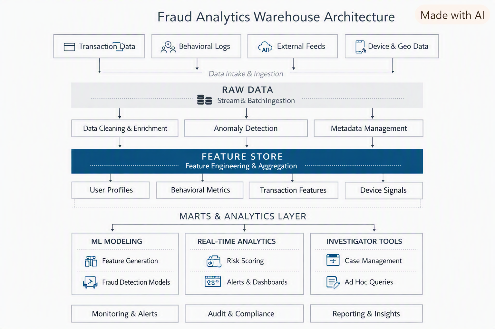

End-to-end fraud detection, feature engineering, and analytics warehouse.
A modern, governed fraud analytics environment built with DuckDB, MotherDuck, dbt, and Python— designed for real-time detection and ML-ready features.
← Back to Portfolio
The Fraud Analytics Warehouse is an end-to-end engineered solution for real-time fraud detection, behavioral analytics, and machine-learning feature generation. It demonstrates modern data engineering practices with a clean, scalable, analytics-ready architecture.
Financial transactions were being processed without a unified fraud detection framework. Analysts lacked:
This resulted in slow investigations, inconsistent reporting, and limited fraud-pattern visibility.
I engineered a complete fraud analytics warehouse with:
The result is a modern, governed, and highly performant fraud analytics environment.
The warehouse follows a medallion-style architecture:
Tools used:
The Fraud Analytics Warehouse provides:
I design and build modern, governed data platforms for analytics and machine learning. If this project aligns with what you're building, I'd be happy to talk.
Contact Me